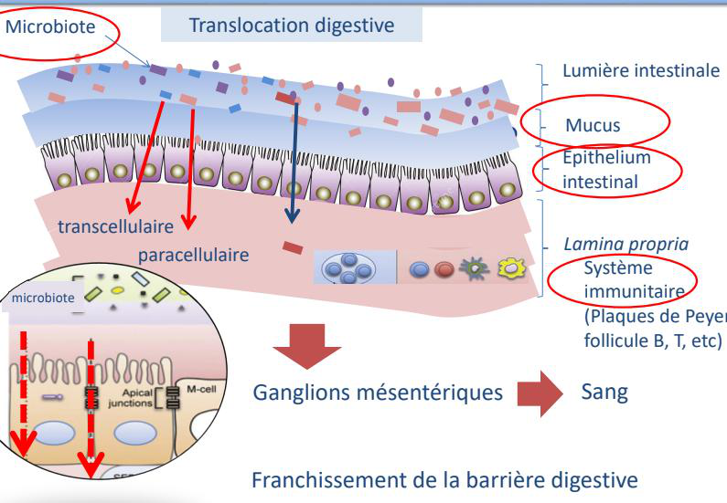
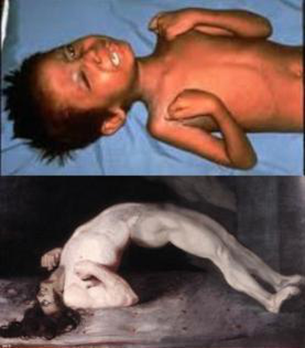
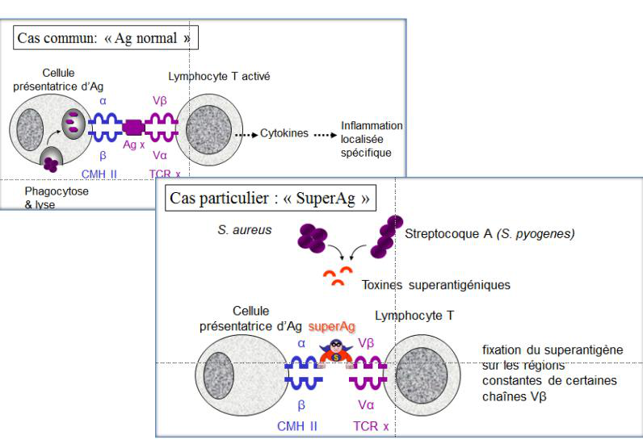
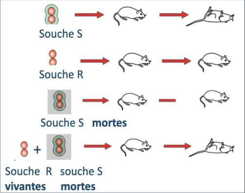
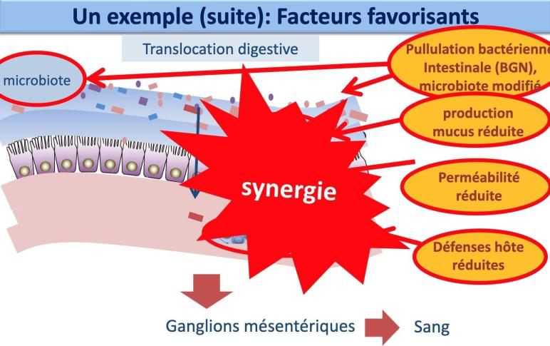
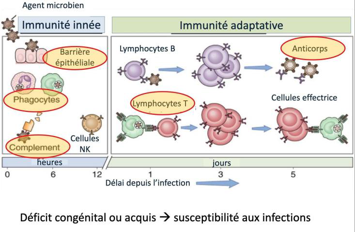

UE3 — Facteurs de risque liés à l'hôte & aux pathogènes (DFGSM3)
D'après le cours du Pr Brigitte Lamy (Bactériologie, cours n°2, 29/05/2026). Pivots : piège / point clé · diagnostic · traitement. Figures du cours intégrées.
⚖️ Idée directrice : la survenue d'une infection = rapport de force entre les facteurs de virulence du pathogène et la capacité de défense de l'hôte. Si toutes les défenses sont opérationnelles et > la bactérie, l'infection est évitée.
Partie 1 · Défenses de l'hôte
1 · Relation hôte / bactérie
Trois axes en continuum : nuisance (parasitisme) ↔ bénéfice (symbiose) ↔ dépendance. « Parasitisme » désigne ici la relation, pas le parasite biologique.
2 · Mécanismes de défense
Rappel — immunité innée
Réaction non spécifique, immédiate, sans mémoire (premières heures) : volet constitutif (barrières, mobilisable d'emblée) + volet induit avec latence (phagocytose, complément, inflammation).
Microbiote (peau, muqueuses) : occupe la place → empêche l'implantation des pathogènes. Un microbiote appauvri facilite l'implantation.
🧬 Barrière digestive : pour infecter, une bactérie doit franchir microbiote → mucus → épithélium → système immunitaire (lamina propria). Si elle survit, elle gagne les ganglions mésentériques puis le sang = bactériémie par translocation — fréquente chez l'immunodéprimé en aplasie (greffe de moelle).

Franchissement de la barrière digestive — les couches successives (microbiote, mucus, épithélium, lamina propria) ; en cas de franchissement → ganglions mésentériques → sang = translocation digestive.
Partie 2 · Pathogénicité & virulence
3 · Grands types de bactéries & d'infection
Type
Caractéristiques
Exemple
Commensale
Pas d'agression, pas d'infection
Dermabacter
Pathogène stricte
Toujours pathogène, agression marquée, faible inoculum (≈ 10 bactéries), facteurs de virulence spécifiques (toxines)
Shigella (selles muco-sanglantes)
Pathogène opportuniste
Pathogène si condition favorable (défenses réduites), virulence mal définie
Colonise une niche puis produit la toxine (pas de multiplication = pas de toxine)
—
Colonisation + invasion + toxines
Multiplication dans l'organisme ± toxines (haut pouvoir pathogène)
S. aureus
4 · Facteurs de virulence
Pathogénicité = terme général (facteurs non identifiés/quantifiés) ; virulence = facteur précis, nommable, quantifiable. Trois objectifs :
Objectif
Facteurs
1 · Établir le contact
Flagelle (remonte les flux liquidiens, traverse le mucus → IU), pili / fimbriae (grappin extensible, ex. fimbriae P d'E. coli → vessie).
2 · Agresser l'hôte
Toxines (poison actif à faible dose) : endotoxines (LPS, en surface, Gram−) vs exotoxines (libérées) ; exoenzymes ; sidérophores (captent le fer = réserve métabolique).
Système de sécrétion type III = « seringue » injectant les toxines à travers la membrane
Gram− (Yersinia, E. coli, Salmonella) ± Listeria
⚠️ Superantigène : se fixe sur les régions conservées (hors site spécifique) du CMH et du récepteur T → active un grand nombre de LT non spécifiques → libération massive de cytokines = choc toxinique.
Botulisme (toxine A/B)
Toxine des conserves mal stérilisées (spores, thermosensible → cuisson protège). Paralysie flasque ; signe : ptosis (paupières tombantes) ; risque = paralysie respiratoire. Pas de test labo (diagnostic clinique) ; pas de traitement spécifique → réanimation.
Tétanos (toxine A/B)
Clostridium tetani (sol, spore). Paralysie spastique (hypercontractée), très douloureuse, position caractéristique ; risque = insuffisance respiratoire. Diagnostic clinique, réanimation.

Botulisme — ptosis bilatéral et atteinte des muscles oculo-faciaux ; tableau de paralysie flasque descendante (toxine A/B bloquant la libération d'acétylcholine).

Toxines A/B (« cheval de Troie ») — la toxine A+B se fixe (B) puis est internalisée ; l'endosome/lysosome sépare A qui, libre, redevient active dans la cellule. Voie d'exposition : cutanée, digestive (botulisme, choléra), inhalation (diphtérie).
6 · Échapper aux défenses : capsule, survie intracellulaire, biofilm
Capsule
Polymère glucidique = bouclier : résiste au complément, masque la paroi (mimétisme du soi) → échappe à la reconnaissance immunitaire → aptitude à disséminer.
Exemples « partiel » : N. meningitidis, E. coli K1, pneumocoque +++ → tous responsables de méningite grâce à la capsule.
Survie intracellulaire
Dans la cellule, la bactérie échappe à l'immunité ET aux ATB ; doit résister aux phagolysosomes.
Ex. M. tuberculosis (survie des décennies) ; S. aureus (infections ostéo-articulaires chroniques).
🧪 Expérience de Griffith (1928) : pneumocoque S (lisse, capsulé) tue la souris ; R (rugueux) non ; S tué non ; mais R + S tué → la souris meurt → R capte le gène de capsule de S = transformation. ⇒ la capsule est déterminante pour la virulence.

Expérience de Griffith — souches S (virulente) / R (avirulente) ; S+R mortes → souris morte = transfert du caractère « capsule » par transformation.
Biofilm
Communauté de micro-organismes adhérant à une surface (inerte ou biologique), enrobée d'une matrice d'exopolymères protectrice → persistance, coopération métabolique, échappement immunitaire et résistance aux ATB. (Ex. tartre dentaire.)
Exemple du cathéter : les bactéries cutanées colonisent la surface, forment un biofilm, puis s'en détachent (embole septique) → bactériémie. ⇒ retirer tout cathéter/sonde inutile. Même principe : prothèses infectées.
Partie 3 · Facteurs de risque chez l'hôte
7 · Facteurs de risque & synergie
Le point essentiel = la synergie de plusieurs facteurs favorisants, typiquement chez le patient de greffe de moelle (immunodépression profonde volontaire, aplasie).
Exemple de facteur
Risque associé
Déficit congénital en complément
Infection à N. meningitidis → candidats à la vaccination.
Déficit acquis en complément
Lupus (LED)
Toxicomanie IV
Endocardite à S. aureus ou Candida
🦠 Exemple — S. aureus : transmission manuportée ; facteurs de virulence multiples (adhésines, toxines, enzymes, capsule, biofilm, internalisation) → infections variées : cathéter, endocardite, digestives, plaies/panaris, pulmonaire, pied chronique.

Synergie des facteurs favorisants — la translocation digestive et les multiples brèches/déficits se cumulent (synergie) chez l'immunodéprimé → infection / bactériémie.

Immunité innée vs adaptative — un déficit congénital ou acquis de l'une ou l'autre = susceptibilité accrue aux infections.